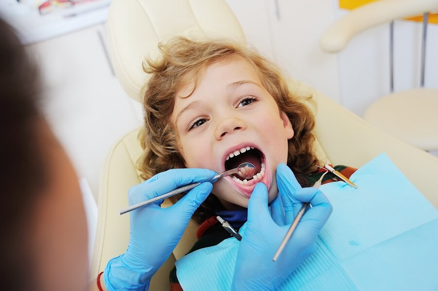

Odontopediatría
¿Qué es un odontopediatra?
Si crees que tu hijo necesita atención dental, deberás acudir al odontopediatra. Pero, ¿sabes exactamente en qué consiste esta especialidad dentro de la odontología? ¿Qué aspectos cubre y cuáles son sus principales características?
Todos queremos lo mejor para nuestros hijos desde las primeras etapas de su vida, sobre todo si se trata de lo relacionado con la salud. En el caso específico de la salud bucodental de los niños, el odontopediatra será el profesional en el que debamos volcar toda nuestra confianza.
A continuación, os ofreceremos los aspectos esenciales de esta especialidad odontológica, esperando despejar las principales dudas que tengáis al respecto./p>
¿Qué es la odontopediatría?
Según la Academia Americana de Odontología Pediátrica, AAPD (American Academy of Pediatric Dentistry), la odontología pediátrica u odontopediatría es la especialidad odontológica que proporciona cuidados terapéuticos y preventivos referentes a la salud bucodental de bebés y niños hasta la edad adolescente, incluyendo aquellos que requieran de necesidades especiales.
Es decir, la odontopediatría se encarga de prestar atención médica dental a los más pequeños, teniendo también en cuenta a los que necesitan de un tratamiento especializado debido a alguna discapacidad física, mental, cognitiva o de cualquier otro tipo.
¿Por qué es importante la odontopediatría?
El cuidado de la salud bucodental es importante desde las primeras etapas de la vida. Mantener una boca y dientes en perfectas condiciones desde la infancia evita, no sólo problemas e incomodidades en ese momento, sino que previene de la aparición de patologías en edades adultas, unas afecciones que pueden llegar a ser más difíciles de tratar si esperamos hasta entonces.
Entre algunos padres puede existir el convencimiento de que los problemas relacionados con los dientes de leche no van más allá de la duración de los mismos, o sea, que una vez que se caigan desaparecerá la patología asociada a estos. Se trata de una idea equivocada, puesto que, por ejemplo, la aparición de enfermedades periodontales o gingivales en la infancia puede arrastrarse hasta la edad adulta.
Además, otras afecciones pueden llegar a ser muy incómodas para los niños, como la aparición de caries y sus molestias asociadas o las maloclusiones que impiden una correcta masticación y digestión de los alimentos. Cada una de ellas es un motivo de sobra para siempre cuidar por el bienestar oral de los pequeños.
¿Qué es un odontopediatra?
El odontopediatra es el profesional encargado de la prevención de la salud bucal desde edades tempranas, así como minimizar el riesgo de que los más pequeños desarrollen odontofobia. Recordemos, el niño de ahora es el adulto del mañana. De esta forma el odontopediatra no sólo realiza tratamientos dentales sino educación y prevención dental.
Esta especialidad se caracteriza por enfocar la agenda de citas en función de los tiempos, pues son las primeras visitas aquellas que principalmente resaltamos. No debemos olvidar que cada niño necesita su tiempo para actuar, adaptarse, entrar es su estado de confianza, etc.
El odontopediatra debe analizar al niño desde su comportamiento en sala de espera, la entrada en gabinete, actitudes, así como tipo de colaboración, teniendo como apartado destacado el número de experiencias dentales que ha tenido y cómo han acontecido, no dejando atrás si el paciente que recibimos presenta necesidades especiales.
En un primer contacto debemos tomar como pautas preguntar los antecedentes médicos, alimenticios e higiénicos que llevan a cabo. Esta es una forma de empezar a familiarizarse y, al mismo tiempo, enseñar lo hábitos correctos.
Debemos hacer hincapié en los consejos a los padres, donde se les dan pautas de cómo actuar, qué decir, así cómo reforzar positivamente la visita al dentista.
Es por todo ello que los odontopediatras tienen un enfoque especial de pautar los tratamientos en las diferentes citas en función del grado de urgencia, cuadrantes (superior e inferior) y del tipo de tratamiento para cada paciente según sus comportamientos y experiencias anteriores.
El odontopediatra debe ejercer de profesor, psicólogo, sanitario, etc. en cada cita y dedicar el tiempo necesario a la motivación del paciente, pues este debe encontrar su espacio de seguridad y confianza que necesita por primera vez o que ha perdido por malas experiencias anteriores.
Principales tratamientos de odontopediatría
¿Qué tipo de intervenciones son las más comunes para un odontopediatra? Dentro del amplio espectro de tratamientos que un especialista en odontología pediátrica puede aplicar, podemos resaltar los más habituales, que son:
Tratamiento de traumatismos dentales
Los niños son inquietos por naturaleza y es normal que sufran con cierta frecuencia alguna caída o golpe. Es posible que, como consecuencia de alguno de estos accidentes, alguna pieza dental se vea dañada, por fractura o por pérdida completa del diente
En estos casos debemos acudir rápidamente a nuestro especialista para reconstruir el diente o reimplantarlo, según la circunstancia (diente parcialmente fracturado, pulpa dañada, diente totalmente extraído, etc.).
Caries dental
Una excesiva ingesta de azúcares y una inapropiada o escasa higiene bucodental son el caldo de cultivo idóneo para la aparición de esta patología infecciosa, la más común entre los niños. Según la presidenta de la Sociedad Española de Odontopediatría (SEOP), Paola Beltri, en 2019 2 millones de niños españoles menores de 6 años tenía caries, lo que representaba un 31% del total de niños en ese rango de edad.
Dependiendo de cada caso y el grado de desarrollo y extensión de la caries, se optará por un empaste y corona o por la extracción de la pulpa dental (pulpectomía) o del diente completo, como tratamientos más habituales.
Uso de selladores
La caries suele aparecer en surcos y fisuras de las piezas dentales, lugares donde mantener la higiene dental es más complicado, existiendo una mayor probabilidad de crecimiento de placa bacteriana y, en consecuencia, de caries.
En odontopediatría es frecuente el uso de sustancias especializadas en el sellado de estos espacios, reduciendo así la aparición de caries entre los niños.
Ortodoncia interceptiva
La ortodoncia interceptiva u ortodoncia infantil es útil para corregir desde temprana edad problemas relacionados con la mordida y la estructura maxilofacial. Con estos tratamientos nos adelantamos a posteriores defectos que serán más difíciles de corregir.
Para la odontología interceptiva se usan dispositivos como las máscaras de tracción, en caso de problemas con la estructura ósea, o como los disyuntores o expansores, para casos de paladar hendido u ojival.
Mantenimiento de espacio
El uso de mantenedores de espacio es de gran ayuda a la hora de evitar que haya una incorrecta erupción de los dientes definitivos como consecuencia de los espacios dejados por los dientes de leche.
Con los mantenedores de espacio se consigue respetar el espacio interdental originado por la caída de los primeros dientes, favoreciendo una estructura dental adecuada.
En Coinsol sabemos de la importancia que tiene ofrecer una atención y servicio excelente a los pequeños, contando con profesionales e instalaciones perfectamente preparadas para hacer de la visita al dentista una experiencia lo más agradable posible.
Como muestra del nivel de nuestros especialistas en odontopediatría, podemos hablar de la Doctora Asunción Mendoza, Catedrática en dicha especialidad y Directora del Máster de Odontopediatría de la Universidad de Sevilla.
Con más de 100 publicaciones médicas a nivel nacional e internacional, la Dra. Mendoza es una de los profesionales de referencia y más reconocidos en su ámbito. Además, está especializada en la aplicación de técnicas de psicología infantil, de forma que los niños se sientan más cómodos a la hora de afrontar la visita al dentista.
También merece la pena destacar que nuestras instalaciones se encuentran acondicionadas pensando en el bienestar de los niños. Por ello contamos en la sala de espera con juegos, dibujos animados, videoconsolas y nuestra mascota, el Ratón Pérez, que tendrá una sorpresa para ellos.
No hay nada más importante para los padres que la salud de sus pequeños, lo que debe incluir el aspecto bucodental. Desde Coinsol te ofrecemos los tratamientos más innovadores, con los mejores profesionales y en un ambiente especialmente preparado para la comodidad de los niños. Si quieres conocernos, no dudes en pedir cita para visitarnos. ¡Te esperamos!